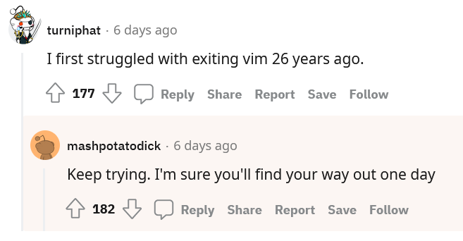

1 First steps with Git
1.1 Learning Objectives
| Learning Objectives: |
| Create a code repository with git. |
| Set up a documented remote copy of the repository on GitHub. |
In the first chapter of this module, you will learn the very basics of Git and learn how to set up a remote repository on GitHub.
There are GUI tools for using Git, but we’re going to focus on the command-line here (except when we get to GitHub).
Note that explanation will be sparse here, as you will be expected to do some assigned reading and watch some videos.
1.2 Installing Git
You’re going to want git to be installed on your local machine. There are instructions here
If you’re using a Mac, you’ve probably already got it. If not, you can install Xcode developer tools, which will include it.
If you’re using Windows (and thus probably also WSL2) you may want it installed for both systems. See the Linux and Windows instructions here.
Note that on Xanadu, the base installation of Git is waaay out of date. In most cases things will still work fine. Do git --version to see what version is currently running (💀). You can module load git/2.30.0, however, if you run into problems.
If you did the chapter on customizing your shell in ISG5311, you can add module load git/2.30.0 to your .bashrc file in your home directory so that the module will be loaded every time you log in.
1.3 A brief pause…
Before going further here, please do the readings and watch the videos in HuskyCT.
1.4 Configuring Git
Before we do much with Git, we want to make sure that your instances are configured correctly. Anywhere you’ve got it installed, you want to set it up to say who you are. Run these commands everywhere you might use it (Mac, Windows, WSL, and don’t forget Xanadu!), but obviously, please edit them first.
git config --global user.name "Bob Loblaw"
git config --global user.mail "Bob.Loblaw@BobLoblawsLawBlog.com"The config subcommand edits git’s configuration file. --global applies settings to all the current user’s repositories on this computer (you can change these settings for individual repositories). You can see your configuration with
git config -l1.4.1 Git’s text editor
Git is meant to hide in the background. You don’t use it to write or edit code, but to track it as it develops. Nevertheless, there are a times when Git will demand that you explain something, or reconcile conflicting edits. When that happens it will drop you into a text editor.
1.4.1.1 vim
By default that text editor is vi, a powerful and widely used command line editor that comes with, shall we say, a steep learning curve.
You can change this. First let’s quickly cover the absolute barest of details for vi (more likely an updated version vim), as you will sooner or later run into it.
Let’s create a dummy file with some text.
echo {a..z} | sed 's/ /\n/g' >letters.txtWe can open it with vi
vi letters.txtAfter opening, you are in Normal mode. You can navigate around, but not edit.
If you press i you will go into Insert mode. Now you can edit. Press escape to go back to normal mode. Beware there are several other modes.
Quitting vi is famously annoying to people who don’t know how to use it (or who have learned and forgotten many times).
First, go to normal mode by pressing escape. After this:
- If you have made no edits and wish to quit, you can type
:thenqthenenter(:qthenenter). - If you have made edits you wish to discard, you can type
:q!thenenter. - If you have made edits you wish to save you can type
:wthenenterTHEN:qOR just:wqthenenter.

If you want the bragging rights (and efficiency) that come with being proficient at using a powerful command-line editor, there are lots of ways to learn. One is through this game, vim adventures.
1.4.1.2 Changing the text editor (if you want)
If you thought, “vim is fine”, then fantastic, you can keep using it. If you thought, “yuck”, and want to change the editor, you can use git config.
If you wanted to use nano for instance, you could do:
git config --global core.editor nanoYou can also use VS Code (only on your local machine). First, you have to enable launching VS Code from the command line (see here)
Then run
git config --global core.editor "code --wait"The flag --wait will cause the terminal to wait until VS Code is closed before moving on.
1.5 Git Basics
Ok, hopefully git is all set up now. We can run through the basics. There are two ways you might get started with a Git repository.
- You create a new one in a brand new directory as you would with a new project.
- You can clone a copy of an existing repository to alter or contribute to it. Perhaps one from GitHub (or GitLab, or BitBucket).
1.5.1 Starting a new repository:
To start a git repository:
mkdir newproject
cd newproject
git initWhich writes out:
hint: Using 'master' as the name for the initial branch. This default branch name
hint: is subject to change. To configure the initial branch name to use in all
hint: of your new repositories, which will suppress this warning, call:
hint:
hint: git config --global init.defaultBranch <name>
hint:
hint: Names commonly chosen instead of 'master' are 'main', 'trunk' and
hint: 'development'. The just-created branch can be renamed via this command:
hint:
hint: git branch -m <name>
Initialized empty Git repository in /home/FCAM/blah/blah/blah/newproject/.git/You can see (with ls -a) that a hidden directory newproject/.git/ has been created. This .git directory is where Git will store the whole version control history. You should never muck around in .git. If for some reason you wanted to destroy the whole version history, you could delete .git and do git init to start anew.
1.5.2 Cloning a repository
We saw this last semester with our RNAseq example, but you can clone a git repository like this:
git clone https://github.com/isg-certificate/rnaseq.git
cd rnaseqWith stderr output:
Cloning into 'rnaseq'...
remote: Enumerating objects: 85, done.
remote: Counting objects: 100% (85/85), done.
remote: Compressing objects: 100% (62/62), done.
remote: Total 85 (delta 35), reused 66 (delta 19), pack-reused 0 (from 0)
Receiving objects: 100% (85/85), 20.91 KiB | 509.00 KiB/s, done.
Resolving deltas: 100% (35/35), done.If we do ls -la:
drwxr-xr-x 5 nreid cbc 2560 Jan 6 17:05 .
drwxr-xr-x 4 nreid cbc 1024 Jan 6 17:05 ..
drwxr-xr-x 8 nreid cbc 5632 Jan 6 17:05 .git
-rw-r--r-- 1 nreid cbc 68 Jan 6 17:05 .gitignore
drwxr-xr-x 2 nreid cbc 512 Jan 6 17:05 metadata
-rw-r--r-- 1 nreid cbc 8 Jan 6 17:05 README.md
drwxr-xr-x 7 nreid cbc 2560 Jan 6 17:05 scriptsYou can see we grab all the contents of the repository, but also we have a .git directory.
1.5.3 Adding files to the repository
Adding a file (or a change to a file) to the repository happens in three steps.
- You create (or alter) a file.
- You add the file to the staging area.
- You commit the file.
Let’s consider our fresh, clean repository newproject. Let’s assume we’re going to start a new bioinformatics project. cd into newproject and type git status. You should see this:
# On branch master
#
# Initial commit
#
nothing to commit (create/copy files and use "git add" to track)git status gives us a summary of any changes that have been made to the repository since it was last “committed” (more in a moment).
Let’s create a script:
# this syntax allows you to print a multi-line file and redirect it.
cat <<EOF >hw.sh
#!/bin/bash
echo "Hello World!"
EOF
bash hw.shNow git status again:
# On branch master
#
# Initial commit
#
# Untracked files:
# (use "git add <file>..." to include in what will be committed)
#
# hw.sh
nothing added to commit but untracked files present (use "git add" to track)Git sees that we have a new file that is not being tracked as part of the repository. We can have lots of files that are not tracked as part of the repository. In fact, when doing bioinformatics, we probably want to keep all our results (and maybe even the data) in this working directory, but we do not want to keep them as part of the
We can add this file to the staging area with git add hw.sh. We could also add everything in the repository with git add --all.
# On branch master
#
# Initial commit
#
# Changes to be committed:
# (use "git rm --cached <file>..." to unstage)
#
# new file: hw.sh
#Now git is tracking the file and its current contents have been staged, but it has NOT been committed to the repository. Remember, there are three conceptual spaces in Git, the working directory (where we actually work) the staging area (where we add changes temporarily) and the repository (where we more or less permanently record updates to the project).
Now that we’ve got our file in the staging area, we can commit it to the repository.
git commit -m "first commit"That produces the message:
[master (root-commit) fe2dafd] first commit added hw.sh
1 file changed, 3 insertions(+)
create mode 100644 hw.sh Now we’ve committed the first file to the repository.
There is lots more to learn, including branching, merging, inspecting the history… we’ll get to that in the next chapter. For the last part of this chapter we’ll introduce GitHub,
1.6 Remote repositories
Git is a distributed version control system, so it naturally allows us (and collaborators) to maintain and interact with remote copies of our repositories.
Assuming you cloned rnaseq above, if you enter the working directory and type
git remote -vYou will see:
origin https://github.com/isg-certificate/rnaseq.git (fetch)
origin https://github.com/isg-certificate/rnaseq.git (push)This indicates the cloned repository is using a repository at the URL https://github.com/isg-certificate/rnaseq.git as a remote. rnaseq.git is a Git repository in the same sense that the .git directory in newproject is a Git repository. The remote is named origin. This is arbitrary and the default choice in git. You can name remotes anything you want. (fetch) and (push) mean that pulling down changes from the remote and pushing them up uses the same URL. The repository is hosted at GitHub (more in the next section), which controls access, so you won’t have permission to push any changes you might make.
If you cd to our brand new directory newproject and do git remote -v You should see no output.
1.6.1 Adding a remote repository
Most people host remote repositories, well, remotely, but to make things clear (hopefully) we’ll create a remote repository for newproject locally.
cd into the directory containing newproject (not newproject itself) and do
git init --bare remotenewproject.gitIf you do ls you should now see (at least) newproject remotenewproject.git.
remotenewproject.git is a git repository, like .git in newproject. There is no working directory (or working tree, as git sometimes calls it). You cannot directly edit the files in this remote (without changing some settings first). This is a result of the option --bare. You want this because you want the remote to serve as a common access point or a backup of your code.
Now cd back into newproject. You can add remotenewproject.git like this:
git remote add origin ../remotenewproject.gitThe git remote add is adding a remote (arbitrarily) named origin at the location ../remotenewproject.git.
If you do git remote -v you’ll see
origin ../remotenewproject.git (fetch)
origin ../remotenewproject.git (push)The remote repository currently does not have any of our local commits in it. We will cover branches in the next chapter, but to push our local commits to the remote, we need to set an “upstream” branch in the remote repository to push to.
We can see that our current branch does not have an upstream remote branch to push to by doing:
git branch -vv* master bf15b43 initial commitWe can set the upstream branch and push in one command:
git push -u origin masterCounting objects: 3, done.
Writing objects: 100% (3/3), 226 bytes | 0 bytes/s, done.
Total 3 (delta 0), reused 0 (delta 0)
To ../remotenewproject.git
* [new branch] master -> master
Branch master set up to track remote branch master from origin.-u origin says we’re setting up an upstream branch in origin master is the (arbitrary) name of the local and remote branch we’re pushing.
Do git branch -vv to see we have now set up a remote master branch at origin:
* master bf15b43 [origin/master] initial commitIn the future we can just do git push to push changes to the remote.
1.6.2 Pushing and pulling from remotes.
There are many cases, such as collaboration, or a single person using multiple workstations, where you will have a single central remote repository and clones in multiple locations. You may update the code in one place, push it to the remote, and then need to pull it down in another place. This can get complicated (more in the next chapter) but we’ll do a simple version of that now.
First, clone a new copy of the remote:
git clone remotenewproject.git newproject_copyCloning into 'newproject_copy'...
done.Now ls and see: newproject newproject_copy remotenewproject.git.
We have the original directory we created, the remote repository, and our new clone. cd into newproject_copy and create a new file:
cat <<EOF >hm.sh
#!/bin/bash
echo "Hola Mundo!"
EOF
bash hm.shNow: git status
# On branch master
# Untracked files:
# (use "git add <file>..." to include in what will be committed)
#
# hm.sh
nothing added to commit but untracked files present (use "git add" to track)Do git add hm.sh and then git commit -m "added hola mundo script"
Now git status:
# On branch master
# Your branch is ahead of 'origin/master' by 1 commit.
# (use "git push" to publish your local commits)
#
nothing to commit, working directory cleanOur branch is 1 commit ahead of the remote.
Now git push to send the local repository changes to the remote:
Counting objects: 4, done.
Delta compression using up to 8 threads.
Compressing objects: 100% (2/2), done.
Writing objects: 100% (3/3), 312 bytes | 0 bytes/s, done.
Total 3 (delta 0), reused 0 (delta 0)
To /path/to/remotenewproject.git
bf15b43..7f84097 master -> masterNow go back to our original newproject directory and git status. You’ll see it does not know that the remote repository has been updated. To pull down any changes do git pull
remote: Counting objects: 4, done.
remote: Compressing objects: 100% (2/2), done.
remote: Total 3 (delta 0), reused 0 (delta 0)
Unpacking objects: 100% (3/3), done.
From ../remotenewproject
bf15b43..7f84097 master -> origin/master
Updating bf15b43..7f84097
Fast-forward
hm.sh | 3 +++
1 file changed, 3 insertions(+)
create mode 100644 hm.shls should show we now have our new file.
To see our commit history try git log
commit 7f84097d7c3528e43023c66b5ddfc7d302567002
Author: Noah Reid <noah@uconn.edu>
Date: Wed Dec 31 23:59:59 1999 -0500
added hola mundo script
commit bf15b4396cb1c7379c03bbca9222ef46f2384359
Author: Noah Reid <noah@uconn.edu>
Date: Wed Dec 31 11:59:59 1999 -0500
initial commitThis process can get complicated, and conflicts can arise. We’ll deal with that in the next chapter.
1.7 GitHub
GitHub is a web service (among others, such as GitLab and Bitbucket) that can host Git repositories. GitHub is a natural place to store a remote repository. It allows you to control who can access or contribute to the repository, and is a great way to share (and find) open code.
We are going to use GitHub in this course in several exercises and the final project. You may wish to keep your final project from this semester in a public repository as a sort of portfolio project.
Be aware that GitHub has an AI assistant, “Copilot” which is trained at least in part on code stored in GitHub. It is unclear which code is used for training, but most likely individual account repositories are used (both public and private).
Before moving forward, please create an account.
After you’ve created an account, you will need to set up SSH key authentication so that Git can access your remote repositories hosted at GitHub. GitHub no longer allows password authentication with command-line Git. You may have some experience with SSH keys already if you set them up for access to Xanadu. GitHub’s documentation for this is here.
You should set up ssh key access from both your local machine and Xanadu. If you have trouble with this, please reach out for help.
1.7.1 Setting up GitHub as a remote repository
The easiest way to approach setting up GitHub as a remote with a new project is to start a new empty repository on GitHub (from your home page) and then clone it locally.
If you’ve already got a repository started, you can more or less follow the same approach we did above. First go to your GitHub profile and click on the Repositories tab (e.g. user isg-certificate would go to the page https://github.com/isg-certificate?tab=repositories) and click the green New button.
Enter the name newproject, select “public” or “private” as you prefer and then click Create repository.
GitHub will then tell you how to push an existing repository (although it will use main as the default main branch name, whereas in this material we have been using master).
Before you do this, however, let’s get rid of our extra clone and local remote:
# force remove git repos
rm -rf newproject_copy
rm -rf newproject.git
# remove current remote
cd newproject
git remote remove originNow we can add a new remote (again named origin). cd into newproject and:
git remote add origin git@github.com:isg-certificate/newproject.git
git branch -M master
git push -u origin masterIf you go to the repository page on GitHub you should see your files hm.sh and hw.sh have been pushed there.
1.7.2 README.md
It’s always advisable to include documentation. GitHub encourages this through the inclusion of a (GitHub flavored) markdown formatted document titled README.md. GitHub will format this document into HTML and include its contents on the splash page for the GitHub hosted repository.
Let’s create a file locally in newproject now and push it to GitHub:
echo "This is a dummy project to demo Git/GitHub" >README.md
git add README.md
git commit -m "added README.md"
git pushNow visit the GitHub repository page and you should see the contents of README.md.
1.8 Summing up
Git has many commands (type git to see them all). We have used the following:
git initto initialize a new repository.git addto add a file to the staging area.git committo commit a staged snapshot of the working directory to the repository.git statusto summarize the current status of new, alterered, or staged files.git remoteto list and modify remote repositories.git pushto push changes to a remote repository.git pullto pull changes from a remote repository. ## A few tips for thinking about Git/GitHubIn Bioinformatics, Git is used for code, documentation and sometimes figures or written reports. Don’t track analysis results unless they are very small and you think its important to version control them. fastqs, bams, etc should not be committed. Git is not meant for dealing with large data.
Generally think about Git as forward looking. If you want to delete a file, don’t think about deleting it from the history of the repository, think about deleting now and leaving it out in the future. If you want to restore a file (that was deleted or altered in a regrettable way) think about it as grabbing that file from a past commit and bringing it forward to replace your unwanted changes rather than “undoing” them. We’ll cover this in the next chapter.
There is a ton of stuff you can do with GitHub beyond hosting remote repositories (including hosting static web pages like this one!). We won’t get too far into it in this course.